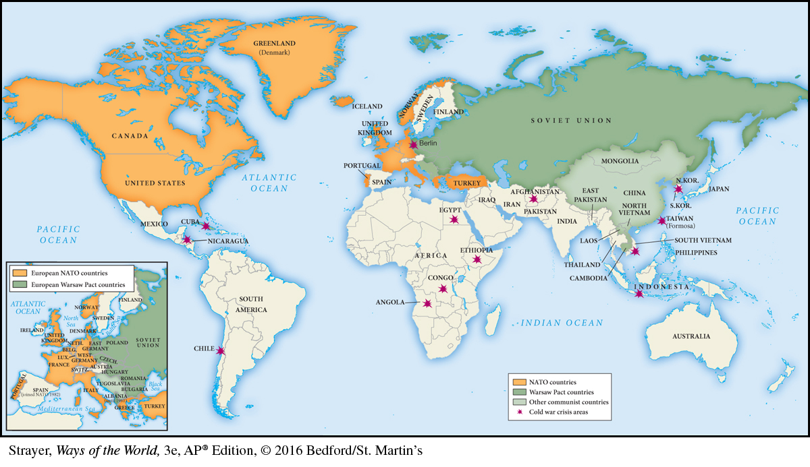

Map 21.3 The Global Cold WarThe cold war witnessed a sharp division between the communist world and the Western democratic world. It also divided the continent of Europe; the countries of China, Korea, Vietnam, and Germany; and the city of Berlin. In many places, it also sparked crises that brought the nuclear-armed superpowers of the United States and the USSR to the brink of war, although in every case they managed to avoid direct military conflict between themselves. Many countries in Africa and Asia claimed membership in a Non-Aligned Movement, which sought to avoid entanglements in cold war conflicts.